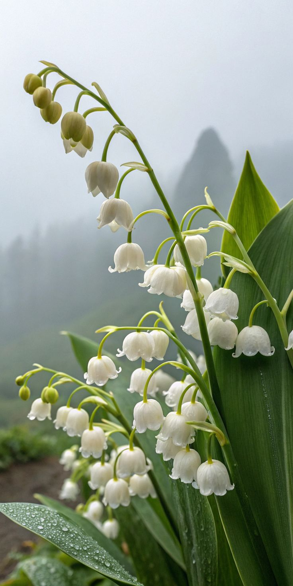
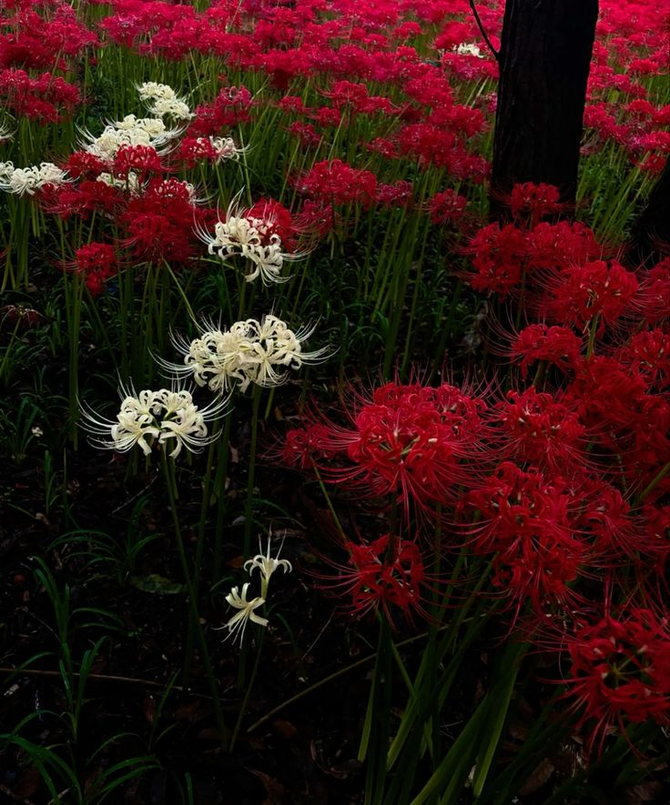
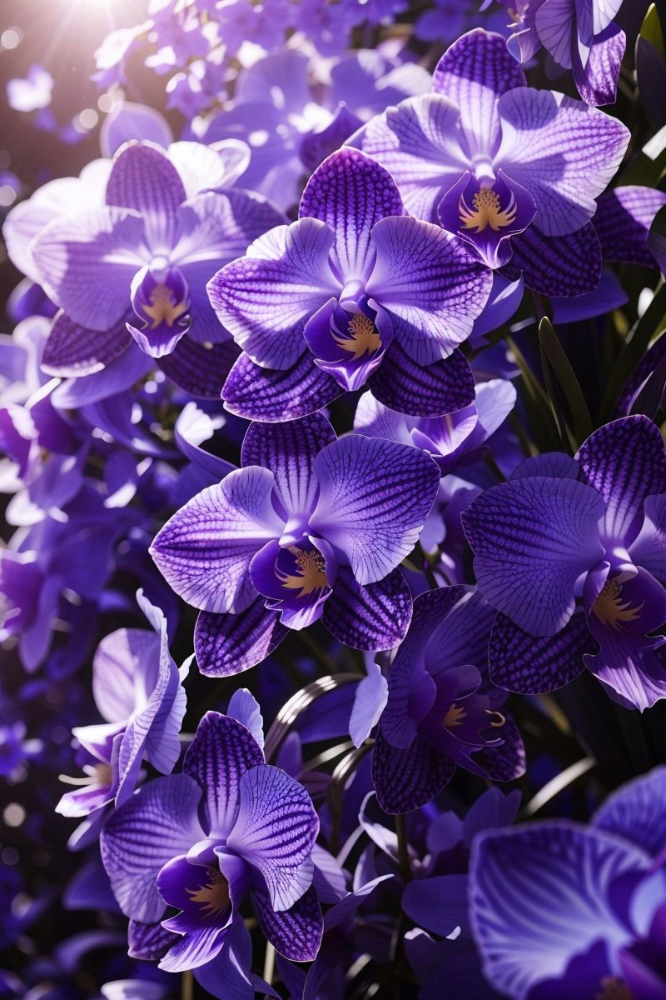
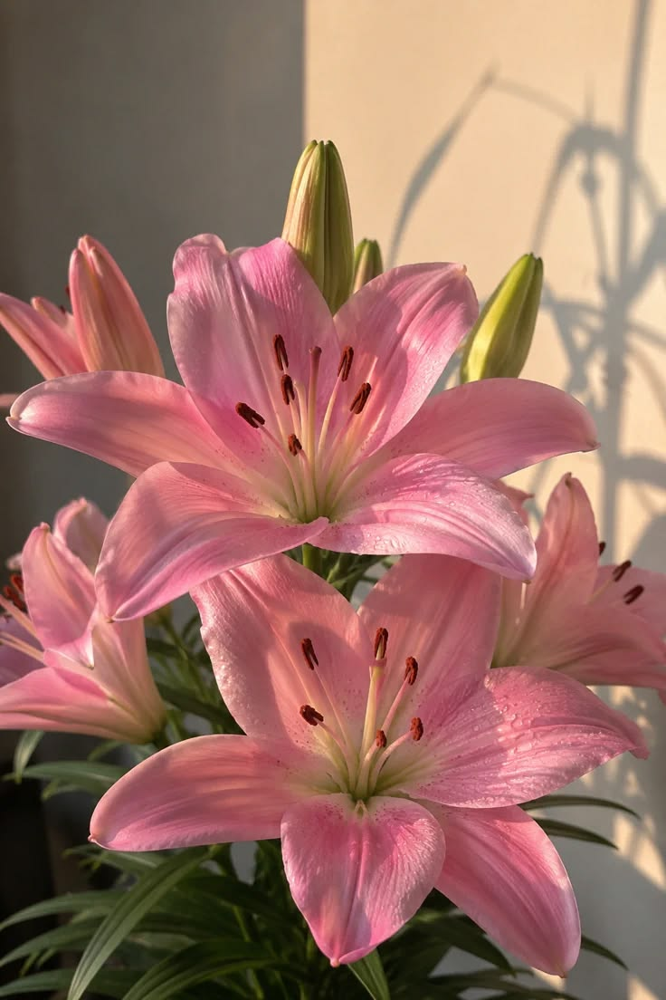
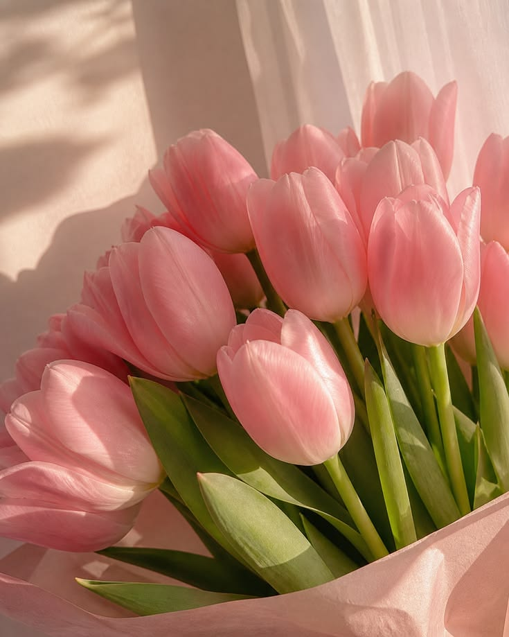
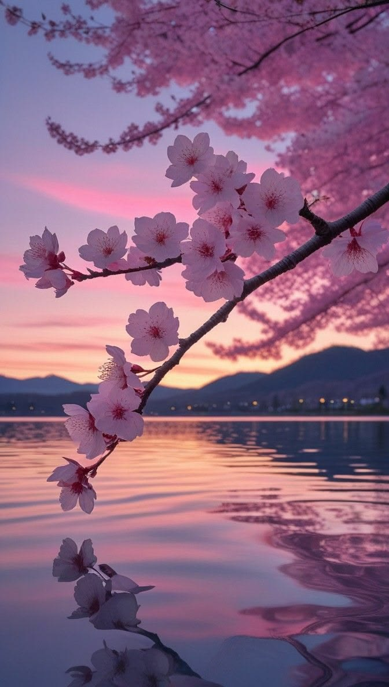

"Soft petals, delicate fragrance, and striking elegance—botanical wonders that capture the rare beauty you carry within."

Blooming like delicate white bells in quiet woodlands, carrying a soothing innocence and a gentle grace that instantly brings peace to anyone nearby.

Uniquely captivating with dramatic, sweeping petals. It possesses an unforgettable, magnetic allure that commands silent admiration effortlessly.

Representing refined beauty, luxury, and inner strength. An orchid carries a natural royalty—poised, thoughtful, and breathtakingly sophisticated.

With six perfectly symmetrical pink petals radiating soft warmth, this flower exudes approachable sweetness, vibrant color, and deep heartfelt joy.

Standing tall, neat, and elegant with vibrant optimism. Like a blooming tulip in early spring, its presence instantly brightens up any room.

Soft pink, delicate, and breathtakingly poetic. Sakura petals capture a dreamy aesthetic and leave behind a gentle, heartwarming magic in every memory.
Someone admires your existence the way you admire the most beautiful flowers !